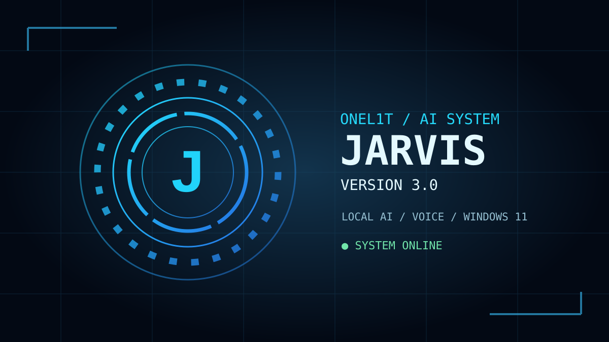

🧠 Local AI
Ollama with Qwen3.5 4B by default and an optional larger 9B model. Chat context stays in memory during a session.
An owner-controlled Ukrainian AI assistant with a cinematic HUD, natural «Так, сер» replies, local Ollama, Spotify controls, and Steam first-account game launching.

Ollama with Qwen3.5 4B by default and an optional larger 9B model. Chat context stays in memory during a session.
Original cinematic JARVIS MODE, male Ukrainian Ostap-based voice, truthful short replies, 0–100% voice volume, startup greeting and opt-in wake phrase.
Open Steam using your first saved account, list installed games and launch them by name. Also control desktop apps and optional Spotify playback. Sensitive actions require approval.
py -3.12 --version.ollama list.1. INSTALL_VOICE.bat — базові компоненти, Spotify, YouTube 2. INSTALL_AI.bat — локальна AI-модель Qwen3.5 4B 3. INSTALL_SPEECH.bat — Whisper для мовлення (приблизно 500 МБ) 4. START_JARVIS.bat — запуск Джарвіса
Whisper рекомендований для голосових команд; без нього використовується Google Speech. Модель 9B необов’язкова й потребує більше ресурсів.
Обери AI: QWEN3.5:4B, натисни CHECK AI, потім TEST VOICE. Перевір текстову команду «відкрий блокнот». Увімкни HANDS-FREE, дочекайся «Мікрофон готовий» і скажи «Джарвіс, котра година?». Щоб вибрати мікрофон, вимкни HANDS-FREE і натисни на його кнопку правою кнопкою миші.
Закрий Джарвіса, збережи копію settings.json та models/, заміни програмні файли з нового ZIP. Залиш налаштування й моделі на місці. Запусти INSTALL_VOICE.bat; якщо Whisper ще не встановлений — INSTALL_SPEECH.bat. Запускай START_JARVIS.bat з оновленої папки.